Rでプレゼンテーション作成
- まずRをインストール
- 続いてRStudioをインストール
- それぞれダウンロードしたらダブルクリックしてインストール
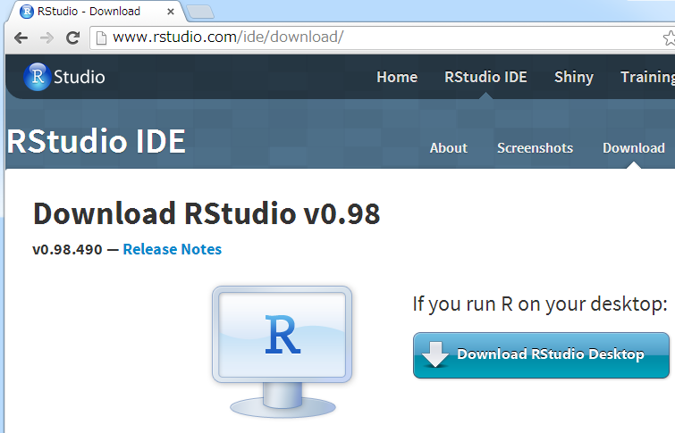
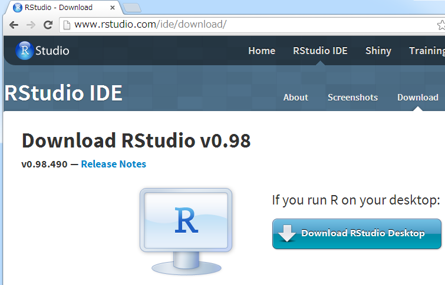
FileメニューからR Presentatin を選択
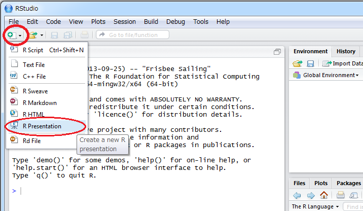
ファイル名を尋ねられるので test とか適当に (ファイル名は半角英数字をお勧めします)
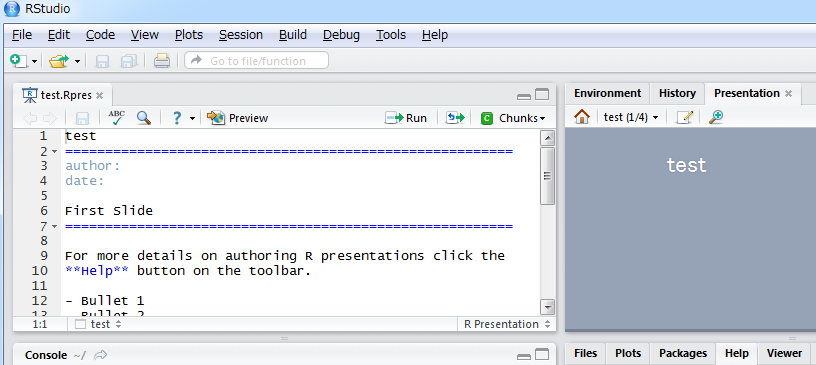
とりあえずpreviewを押して
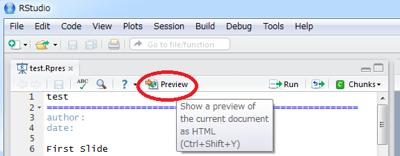
ここを押すと、作成されるイメージが確認できます
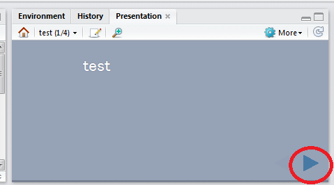
また拡大アイコンを押すと、新たにウィンドウが現れます
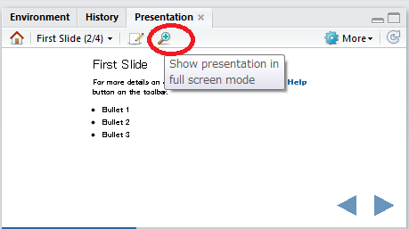
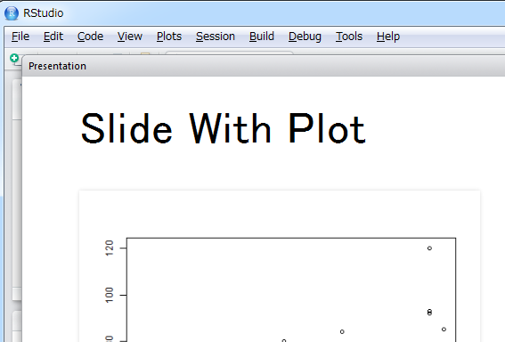
それでは雛形を修正していきましょう(RStudioは日本語入力に少し難があります)
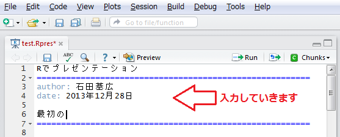
ここで再びpreviewボタン押して、右Presentationタブを操作してみます

Macの場合、問題ないと思いますが、Windows環境だと文字化けしてしまいます
Fileメニューから save with Encoding を選択
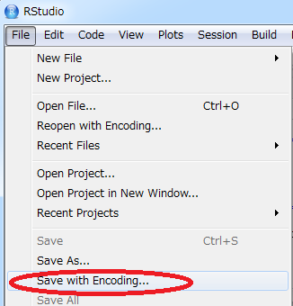
ダイアログでUTF-8を選んでOK。previewを実行すると文字化けが解消されます
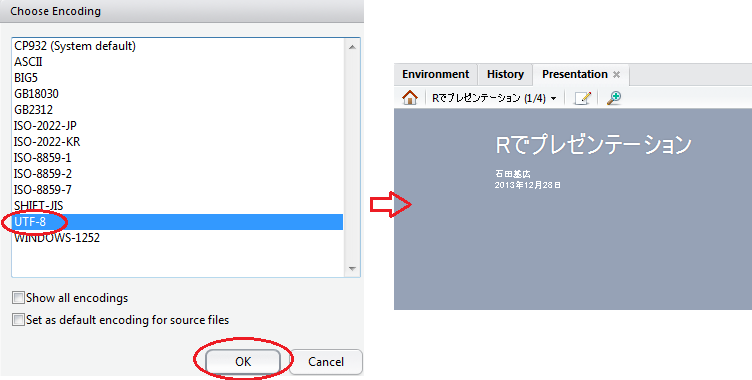
Markdownという書式で記述します
詳細はヘルプで確認できます(ただし英語です)

Authorizing R Presentation はRStudio上での使い方
Markdown Quick Reference はMarkdown記法の説明
とりあえず次のルールを覚えましょう
```{r} 改行 ``` の間に書く []()という記法を使うたとえば以下のように書くと次のスライドができます
iris とは
===============
iris データの散布図
```{r,fig.height=5}
plot(cars)
```
[irisについて](http://ja.wikipedia.org/wiki/Iris)
iris データの概要と散布図
plot(Sepal.Length ~ Sepal.Width, data = iris)
自前で用意した画像を挿入するには

という書式を使います